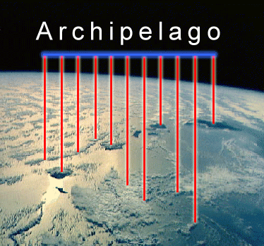
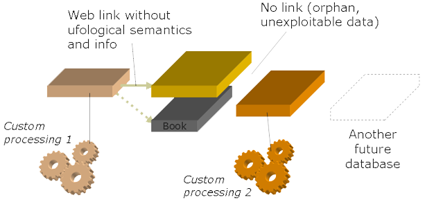
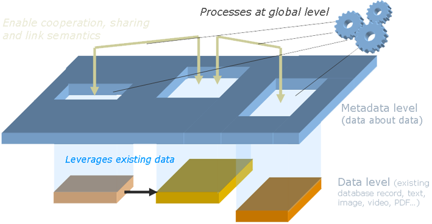

Java open source software tools for ufology
Java open source software tools for ufology |
Thoses projets aim to build Open Source Software tools for ufology.
|  |
For many years, a lot of ufological databases ufologiques has been developed. As their mutual incompatibilities prevented any data exchange, their proliferation has constituted an archipelago where the lack of naviguable paths prevent every communication required for the research and knowledge access in general. The replacement of such data islands by larger islands, from unifications, concurs only to increase the problem, without stopping proliferation. But here is the question: should it be stopped or leveraged?
In ufology as in any other domain, the goal of a database is to structure information to apply automated processes on it. Find a case in a wink, a sighting place for a given date, sort out the trends on a given time range, are only a few examples of a multitude of operations that are offered by ufological databases today.
However they are all affected by the same paradox: while each of them aims to study the same phenomenon, none work on the same data. As a result, each of those data islands is a world as itself, in autarky, with its own consistency auto-developed: its own data selection, its own processes, and its own results, that always don’t fit those of its neighbors. You don’t need more to crystallize ufology as many doctrines.
However the problem is less about working on your data than not having access to other’s. Just like if you had specific glasses for each book you may want to read. Databases are our glasses, but are quite useless if they allow us to read a single book. Even if data from databases are talking about the same thing, they don’t tell the same story. Their cases, more or less numerous, their details, their sources, even their subjective evaluations are as much features that add a new perspective to the topic we study. We have to read all those books, the existing ones as much as the ones to come, to complete, compare, and enrich our viewpoints.
|  |
One idea to solve this problem has been to unify existing databases. To build a big book that would gather data from the smaller ones. However it seems that it is a cure worst than the problem. Not only this big book remains a book, one more book, with the same autarkical and full-with-inertia vision of the topic, but it adds new weaknesses: an implementation with exponential difficulty – to build the sum of books, then the sum of the sums, etc. while new databases are appearing – but also a compromise about data dilution: at one location where only one unified data can be put only, you can’t leverage the differences which constitute, as themselves, valuable information. Even if you consider that such a database ought to store a single (ideally objective, without any error) truth only, you’ll have to pray for the good data to be selected. Indeed, unifying is selecting. As itself, it can only disagree with a part of the users. Because it will only contain data it give some credit, because it will not fit the structure they expect, because the processes they expect will miss, because, even if it would not be illusory, it would be at best the host for a unique thought, and the barrier to any innovation.
If we can’t go against the very archipelago nature of the knowledge base, we have to leverage it. Instead of building a big unified book, let’s the keep the data where they lie, using the structure they require, and let’s look at them using big, big meta-glasses.
A meta-base doesn’t contain data. More accurately, it contains very special data, data that describe data: Where are the databases that contain data about a given case? What type of data this database stores? What is the meaning of the X field? Has it the same meaning of the Y field from such another database? This is the type of information that is stored in a meta-base. Each time a new database appears, its description is recorded into.
|  |
Thanks to such information, a meta-base, even if it does not contain the actual data, becomes able to retrieve them: to connect through the Internet to a first online database, invoke the search form a second one, aspire the pages of the third one. Indeed, data are not limited to databases in the strict sense: they are any accessible information, whose structure can be described.
But, by the way, what could be the benefit for such a data source to be linked to a meta-base? Before talking about benefit, this is a matter of conviction first: data must be shared par everyone, for the sake of efficient research. Furthermore, linking your database to a meta-base is plugging into a network where information flows, and so where you can provide as much as you can receive. Information is virtually no longer here or anywhere else, likely to be lost, but now able to migrate, toward fellows, towards other backup places, or toward other technical structures that constitute the next generation of your own database. How much data are today stuck into an existing database, likely to disappear along with a software that would be to costly and complicated to make evolve?
But a meta-base would remain quite limited if it wouldn’t be more than a database index or network. What about seeing all databases at the same time? This seems impossible, or at least not very practicable. How could a user benefit from all these different data and structure at the same time?
Indeed, such a « global » vision, even if becoming possible, is not practicable as is. Applying processes imply a common data model which, we know, doesn’t exist: it is specific to the databases that store data, and we known that we cannot enforce an universal model, as everyone can have its own view.
But isn’t a view what we are willing to provide? Just like a pattern applied on the global data, on which would be drawn links between common concepts? Such a virtual data model is conceivable. Being potentially different for each of us, existing at the metal level only, it is a meta-model.
Such a meta-model is independent from the databases. As a result, each of the processes applying to it, while leveraging heterogeneous data through the meta-model, are also kept independent from them. Here is a fundamental separation: the working model and its associated processes are no longer condemned to die with the database they applied onto. We then can start capitalizing on them.
As one have understood, introducing of a meta level above databases is not unification. Actually, this is indeed the very philosophy of the idea: to allow a shared leveraging of data, without erasing differences. There is no doubt that a number of different meta-models will coexist, and be incompatibles one with another (but nothing would prevent them to be accessible again at an even upper metal level, according to the same principle). There is no doubt also that a number of databases will choose to stay away from meta-bases. But, more important that effectively gathering all existing and future databases, the crucial point is to make it possible. Tomorrow, the technical excuse for not sharing data and information compartimentization will no longer be valid, and one will have to assume such a choice.
Référence :
For many years sightings have been filled as textual accounts or/and report forms.
UFO@home aims to provide a standardized and efficient way to report and replay UFO sightings.
| Project | Disciplines | Project artifacts | Resources |
|---|---|---|---|
| Business modeling — The modeling of concepts of the ufology domain. | |||
| Requirements — What is expected from the product, with which constraints. |
|
||
| Analysis — A modeling of the information system which fulfills the requirements. | |||
| Design — How the information system will be assembled. |
|
||
| Implementation — The source code of the information System. |
|
||
| Test — The tests to check the conformity of the system to meet the requirements | |||
| Deployment — The installation of the software on various platforms and servers. | |||
| Configuration and change management — Management of workgroup and various versions of the software. | |||
| Project management — How the project is managed and organized. | |||
| Environment — Which processes and tooling for the project. | |||
| Product |
|